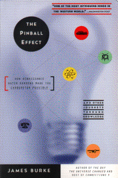

The Pinball Effectby James Burke
publisher: Little Brown & Co.
Non-fiction, 286 pages | 
(book cover art, Copyright ©1996 London Writers Ltd.)
Used with Permission. |
Return to the Book MenuPrevious|Next
Description:
An explanation of how very disparate events are connected to
one another, linking most of human history in science, technology, warfare,
and the arts. The book can be read as a series of links (like a Web
page), to explore the effect one event had on several different others.
Recommended for: students of history and history of
science, people who like making "Connections."
Did-you-read questions:
Deadline: February 1, 2005.
These should be easy questions, but you should have the questions ready and keep an eye out during your reading. Each question should be answered with 1-2 sentences.
Note: these questions are not probably not the most important part of the book! Your essay will not have to cover these questions!
- How was the California gold rush connected to the British tea trade?
- How did the French craze for shawls spark the idea for a computer?
- Why was the discovery of the gyroscope important?
- Cadmium links two very opposite world views. What were they?
- The ideas of medieval Japanese tea drinkers and Renaissance Florentine
architects culminated in what modern idea?
Report Questions:Deadline: Peer Review Session on February 8, 2005; paper due February 10, 2005.
You should write a 3 - 4 page essay on one of the following questions. Your essay should include examples and references to the book, unless otherwise specified. Page number references are sufficient for citing material from the primary book. If you use outside materials, cite your sources in full. If you would rather write on a different topic, you may, but clear it with Mr. Howe or Ms. Sullivan first.
- Connections are not necessarily cause and effect relationships. Pick
one of the strands in the text, and reorganize it in terms of cause and
effect.
- Pick one of the events in the text. What would happen if it was removed
from the "web of change"? Would the world be greatly changed, or
would different connections form with the same results?
- Most books are very linear; they are intended to be read straight through
or referenced. How does the author's "web" style compare to this? Does
it enhance your appreciation for the material, or is it just distracting?
Give examples.
- What events, discoveries or inventions seemed to be a nexus (a conjoining
of many threads)? Are they all famous?
- As you read this book, what do you notice about the way discoveries are
made? How much of discovery and innovation is intentional, how much is
accidental, and how much falls into other categories of discovery?
Graphic and Presentation:
Deadline: February 21 - March 3, 2005.You will give a 10 minute presentation on both of the following:
- Convince your peers that they should (or should not) read this book. (This may include a brief summary of the book.) Give examples of what was cool or worthwhile in the book, and what you got out of it (or didn't).
- Describe a (realistic) science idea that you learned about in this book, citing information from at least 2 external sources (other than the dictionary). If you would like help choosing or understanding an idea from your book, you are invited to come talk to Mr. Howe or Ms. Sullivan.
Note: This presentation should not be just a reading of your paper!Along with this presentation, you should have a graphic that will go with it. A Power Point presentation is recommended, but if you have a special idea for a something else, such as a model, an original video presentation, or a well done drawing/ painting/ sculpture/ etc., you may do so, provided it involves a similar level of effort and polish. Speak to Mr. Howe or Ms. Sullivan first if you are considering an alternate graphic format to the Power Point.
Return to the Book MenuPrevious|Next